Седьмая часть цикла статей, подробно рассказывающих о протоколе MIDI.
С некоторых пор слово "шоу" прочно закрепилось в нашем языке для обозначения всего того, что раньше называлось представлением. Спектакль, мюзикл, концерт — то есть некое массовое мероприятие, где задействованы артисты, звук, свет, видео, спецэффекты. На западе "шоу" трактуется и в более широком смысле, начиная от мультимедийной лекции или семинара и заканчивая парками развлечений по типу Диснейленда. А если говорят о "живом" выступлении, то есть когда на сцене работают артисты, используется более конкретное Live Show.
Техническое обеспечение современного шоу может включать в себя весьма сложный комплекс оборудования: звуковые и световые системы, видеопроекторы, механику сцены, пиротехнику, динамические пневмофигуры, трансформируемые декорации, спецэффекты разного калибра. Многое из перечисленного (например, акустические системы и световые приборы) зрители видят непосредственно. Но есть еще и подводная часть айсберга — вспомогательное оборудование, начиная от простейших механических переключателей и заканчивая интеллектуальными устройствами и робототехникой, а также компьютерными программами, обеспечивающими согласованную работу всех систем.
Технология управления шоу зародилась еще в 60-е годы, в развлекательных парках. Все началось, конечно, с ручного управления, когда стейдж-менеджер подавал команды голосом, а оператор конкретного устройства (например, электрического подъемника) их исполнял. Один из американских стейдж-менеджеров вспоминает, как ставились мюзиклы на Бродвее: "В шоу было занято от 40 до 50 техников, бегающих за сценой как сумасшедшие. Я использовал вспышки света, чтобы дать команду на запуск определенной сцены, давал команды операторам через головные гарнитуры и работал по сценарию, записанному на листке бумаги".
Сегодня технология управления шоу — это целая индустрия со своими стандартами и протоколами. Приборы одного типа объединены в системы: управления светом, звуком, машинерией (механикой сцены), проекцией, пиротехникой. Каждая система состоит из контроллера и конечных приборов, которыми контроллер управляет посредством определенных сигналов. Например, световой пульт может управлять диммерами и сканерами посредством цифрового протокола DMX-512 по интерфейсу RS485. Эти устройства совместно с пультом образуют самостоятельную шоу-систему, внутри которой все взаимодействие происходит с помощью протоколов класса "контроллер-прибор".
Термин Show Control означает нечто большее — соединение самостоятельных шоу-систем в одну большую управляемую систему. Так, компьютер, подключенный к дым-машине и регулирующий количество тумана в декорации морской гавани — это еще не система Show Control, как, впрочем, и звуковая система, воспроизводящая шум прибоя сама по себе. Только объединение этих систем в одну, управляемую от главного контроллера, является полноценной системой управления шоу.
По отношению ко времени все шоу можно разбить на два типа: асинхронные и синхронные. Пример асинхронного шоу — "дом с сюрпризами" в парке развлечений. Здесь посетители, бродя по дому, задевают разные датчики, запуская сопоставленные с датчиками сцены (то есть последовательности каких-либо механических процессов, звуковых и световых сигналов). Все сцены могут происходить в разных частях "дома" одновременно и независимо друг от друга, без привязки к единой шкале времени.
В синхронном шоу, как следует из названия, используется некий способ синхронизации событий. Каждое событие привязано к определенному моменту времени, а шкала времени формируется мастер-устройством на основе, например, видеофрагмента или саундтрека. Мастер-устройство генерирует таймкод, который поступает в подчиненные контроллеры или непосредственно в конечные приборы. Возможен и более простой вариант, при котором устройства только стартуют одновременно, по команде с главного контроллера, а долговременная постоянная синхронизация отсутствует. Пример синхронного шоу — концерт или спектакль, где световые сцены и другие элементы шоу синхронизированы со звуком.
Появление MIDI Show Control
В конце 80-х годов прошлого века протокол MIDI стал привлекать внимание театральных инженеров и специалистов по концертному свету в качестве альтернативы существовавшим на тот момент протоколам управления. И хотя MIDI-секвенсоры и средства ввода (контроллеры) не очень подходили для задач театральной автоматизации, сам протокол подходил вполне, как по возможностям, так и из-за невысокой стоимости и широкой распространенности.
Основная задача состояла в вызове сцены, запрограммированной в световом пульте. На всякий случай уточню, что сцена — это фиксированное состояние функций осветительных приборов. Сцена могла быть сколь угодной сложной (с закольцовками, связанными макросами, подпрограммами и т. п.), но для ее вызова требовалось нажатие всего пары кнопок светового пульта: LOAD (загрузить) и GO (запустить). Очевидно, MIDI здесь вполне мог заменить оператора пульта. Все, что нужно передавать в сообщении, — это номер сцены и саму команду. А данные, связанные со сценой, находились бы в памяти светового пульта.
Постепенно производители светового оборудования стали использовать MIDI в своей продукции. Но, как это часто бывает, возникла проблема совместимости. Компании, занимающиеся театральным светом, производили системы, в которых сцены менялись MIDI-сообщением Program Change, а компании, производящие концертное световое оборудование, использовали команды Note On.
В 1989 году Andy Meldrum, сотрудник фирмы Vari-Lite, предложил разработать открытый протокол, который позволял бы соединять шоу-системы разного назначения и разных производителей, и управлять ими с помощью любого MIDI-контроллера. К концу 1989 года Charlie Richmond из компании Richmond Sound Design организовал рабочую группу в составе MMA (MIDI Manufactures Association) и открыл форум на электронной доске объявлений. Созданный в результате проект стандарта был утвержден MMA и JMSC (Japanese MIDI Standard Committee) и 25 июля 1991 года превратился в "Рекомендованную практику RP-002", или, иначе, в MIDI Show Control версии 1.0.
Основные принципы
Протокол MIDI Show Control (MSC) предназначен для объединения интеллектуальных систем управления шоу-техникой (контроллеров) в единую сеть. MSC напрямую не управляет конечными приборами и не заменяет такие протоколы класса "контроллер-прибор", как DMX-512 или Strand. Это очень похоже на соединение MIDI-секвенсора и синтезатора. Секвенсор посылает синтезатору высокоуровневую команду "взять ноту", а синтезатор в ответ запускает заложенную в его недрах программу формирования звука, то есть целый набор низкоуровневых операций.
В спецификации MSC используются термины Controller и Controlled Device. Обычно MSC-система состоит из одного, главного контроллера — им чаще всего является обычный компьютер (PC или Mac) с соответствующей программой управления и MIDI-интерфейсом. Этот компьютер и называется в спецификации словом Controller. А световой пульт в данном случае является управляемым устройством (Controlled Device), которое выполняет команды главного контроллера, переводя их в команды типа "контроллер-прибор" и посылая последние к световым приборам по своим коммутационным каналам, независящим от MIDI (в случае DMX-512 — это витая пара с земляным проводом в оплетке).
Схожим образом к главному контроллеру подключаются по MIDI остальные шоу-системы (механика сцены, пиротехника и тому подобное). Набор команд MSC основан на структуре команд существовавших в то время шоу-систем.
Управляемое устройство (например, световой пульт) может также передавать команды MSC через свой MIDI-выход. Это позволяет записывать действия, производимые оператором на пульте — примерно так же, как происходит запись в секвенсор с MIDI-клавиатуры. Только в данном случае используется программа, оперирующая не треками, а списками сцен (Cue List). При записи она фиксирует все события, приходящие от управляемых устройств, и размещает их в списке сцен со своей позицией на шкале времени.
Таким образом, можно заранее прописать нужную последовательность событий с каждого пульта управления, используемого в шоу, отредактировать полученные данные, а во время шоу запустить список на воспроизведение. В MSC используется таймкод MTC, а это значит, что управляемые устройства можно синхронизировать с главным контроллером. Свет со звуком, изображение со светом, и всю систему в целом. При этом точность выдачи команд по времени равна одному кадру (то есть около 1/30 секунды).
Кроме того, по MSC можно связать несколько контроллеров одного типа. Так, например, если две световые консоли соединены по MIDI, то нажатие кнопки GO на одной из них приведет к тому, что вторая консоль отработает ту же команду GO, но уже без оператора. Здесь все довольно очевидно и напоминает первоначальное предназначение MIDI — управлять с одной клавиатуры несколькими синтезаторами одновременно.
Важный принцип управления "живым" шоу состоит в том, что сбой одного управляемого устройства не должен привести к сбою в управлении другими устройствами. Этот принцип может быть реализован с помощью открытой или закрытой петли.
В системе "открытая петля" подтверждение команд от управляемого устройства к контроллеру не требуется. Используется однонаправленная передача данных и, соответственно, одностороння коммутация. То есть, MIDI-выход главного контроллера соединяется с MIDI-входом управляемого шоу-устройства, и только. Этот экономичный способ был выбран в MSC в качестве основного.
В системе "закрытая петля" используется взаимная коммутация устройств и ожидается стандартизированный ответ от управляемого устройства. Такая система требует более интеллектуальных контроллеров и занимает большую полосу пропускания, но при этом достигается большая точность во взаимодействии устройств, обнаружение, коррекция ошибок и прочие прелести. Метод закрытой петли предложен в версии MSC 1.1, появившейся в феврале 1996 года (документ RP-014). Для работы в режиме закрытой петли используется двухэтапный протокол подтверждения (2 Phase Commit), о котором поговорим в следующей статье.
Предосторожности и ограничения
В шоу-системе нередко используется опасное оборудование (в том числе представляющее угрозу для жизни), например, пиротехника или механика. Но это не значит, что такое оборудование управляется MSC непосредственно, и сбой или ошибка в программе приведут к неприятным последствиям. Спецификация крупными буквами предупреждает: "[Протокол MSC] никоим образом не отменяет обычные меры безопасности, какие должны соблюдаться при использовании потенциально опасного оборудования. Для максимальной безопасности должны применяться такие ручные элементы управления, как аварийные выключатели, блокираторы, ограничители, системы подтверждения команд и прочее. Из автоматических устройств — запирающие переключатели, датчики близости, детекторы газа, инфракрасные камеры, датчики движения и давления. Протокол MSC не предназначен для отдачи команд опасному оборудованию. MSC лишь подает сигнал о действии, которое желательно выполнить, если все требования и условия безопасности соблюдены. Только соответствующим образом спроектированные системы и подготовленный обслуживающий персонал могут определить, насколько эти требования выполняются в конкретной ситуации. Метод двухэтапного подтверждения 2PC исключительно надежен и может использоваться для обеспечения дополнительной безопасности в шоу-системах. Однако 2PC должен быть реализован в соответствии с требованиями этой спецификации и только в дополнение к вышеперечисленным мерам".
MIDI Show Control не является единственно возможным решением для управления шоу-системами. Он не лишен некоторых недостатков, присущих технологии MIDI в целом. Первый недостаток — невысокая скорость передачи данных, а, следовательно, не всегда адекватное время отклика приборов. Иногда эта проблема устраняется простой разгрузкой линии, то есть соединением приборов не цепочкой, а "звездой" из распределительной коробки (MIDI Thru Box) или многоканального MIDI-интерфейса/маршрутизатора.
Для большинства же задач управления шоу, скорость MSC вполне приемлема и даже избыточна. Например, стандартная команда "Свет-Сцена 36.1-Пуск" займет 10 байт, которые будут переданы примерно за 3 мс (подробности смотрите в предыдущих статьях цикла). Это время примерно в сто раз меньше среднестатистической скорости реакции оператора пульта.
Второй очевидный недостаток — максимальная длина MIDI-кабеля, которая не должна превышать 15 метров. Он может быть устранен применением усилителей на линии ("бустеров"), в результате чего длина линии может быть доведена до трехсот и более метров. Кроме того, есть и другие варианты передачи MIDI-сообщений (FireWire или беспроводные системы).
Формат сообщений
Сообщения MIDI Show Control относятся к категории универсальных эксклюзивных сообщений реального времени (Universal Real Time System Exclusive) и используют Sub-ID#1 = 0x02 (подробнее о системных сообщениях и Sub-ID см. в третьей статье цикла).
Шаблон сообщения MSC показан на рис. 1. Начинается сообщение байтом 0xF0, признаком SysEx. Затем идет байт 0x7F, определяющий категорию реального времени, затем передается номер прибора, которому адресовано сообщение. Далее — Sub-ID 0x02, признак MSC. Байт формата команды показывает, к какой категории оборудования относится сообщение: к звуку, свету, механике и т. п. Далее следует сама команда. Как правило, это одно действие, например, "пуск" или "стоп". Затем передаются дополнительные данные — параметры команды. Чаще всего это номер сцены и данные времени. Завершается SysEx-сообщение, как обычно, байтом 0xF7. Общее число байт в сообщении MSC не должно превышать 128.
Как правило, команды адресуются одновременно только одному устройству. Например, для выполнения команды GO на двух световых пультах нужно передать от главного контроллера сообщения, показанные на рис. 2.
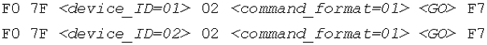
Номера с 0x00 по 0x6F соответствуют индивидуальным устройствам. Номер устройства, как правило, задается пользователем в настройках (как главного контроллера, так и управляемого). Возможно также создание групп устройств, для чего используются групповые идентификаторы (с 0x70 по 0x7E, то есть всего до 15 групп). Это удобно, если одни и те же сообщения необходимо постоянно посылать нескольким устройствам. Не все устройства обязаны отвечать на групповые номера.
Наконец, есть специальный широковещательный номер 0x7F, который используется для передачи сообщений всем устройствам сети, независимо от того, на какой номер они настроены. Один управляемый контроллер может отвечать на несколько номеров, как индивидуальных, так и групповых. И наоборот, несколько управляемых контроллеров могут отвечать на один и тот же номер, что позволяет обойтись для них одним сообщением.
Формат команды
Название "формат команды" (command_format), на мой взгляд, несколько неудачно, поскольку не отражает сути вопроса; к тому же, его можно перепутать со следующим байтом — самой командой. Формат команды в терминологии MSC — это просто-напросто категория оборудования, для которой предназначено сообщение.
Стандарт определяет несколько общих категорий, внутри них — несколько более конкретных, и особую категорию All-types. К общим категориям относятся свет, звук, машинерия, видео, проекция, спецэффекты и пиротехника. Номера этих категорий содержат в младшем полубайте ноль, за исключением категории "свет". Номера более конкретных категорий заключены внутри общих и имеют тот же старший полубайт, что и общая категория (рис. 3).
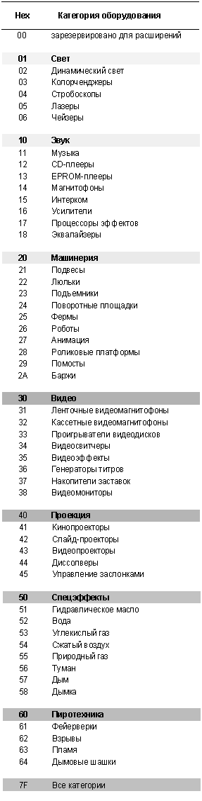
Код 0x00 зарезервирован для будущих расширений протокола. Как видно из таблицы, коды выше 0x64 не определены, и их можно использовать для нужд собственной системы, если в ней есть какие-то особенные категории оборудования, не отраженные в спецификации.
Чтобы сообщение было принято устройством к обработке, в нем должен быть задан не только правильный номер устройства, но и категория оборудования (то есть байт command_format). Очевидно, сообщение для контроллера сжатого воздуха должно игнорироваться контроллером подъемника.
Категория All-types (0x7F) используется, если сообщение подходит всем без исключения устройствам системы. Однако и в этом случае устройства будут отвечать на команду, только если в ней указан правильный device_ID. Для отправки сообщения всем устройствам, независимо от их типа и номера, можно воспользоваться комбинацией широковещательного номера 0x7F и категории 0x7F.
Команды и данные
Основой сообщения MSC является байт команды, который говорит управляемому прибору о том, что, собственно, от него хотят. Например, типичные команды для светового пульта: GO (пуск) и FIRE (запуск макроса). Для каждой категории оборудования может использоваться до 128 команд. В MSC предложены некоторые типичные команды (см. далее), но, как и в случае с байтом command_format, здесь можно использовать собственные значения. Важно только, чтобы устройства системы их понимали.
Код команды 0x00 зарезервирован для дальнейших расширений. Таким образом, вместе с байтом 0x00 формата команды в MSC предусмотрены два уровня расширения (рис. 4). В настоящее время таких расширений нет.
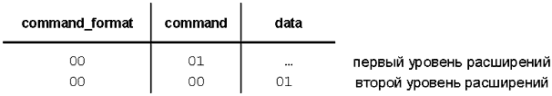
Каждая команда может содержать дополнительные данные. MSC здесь накладывает только одно ограничение — данных должно быть столько, чтобы полная длина сообщения не превышала 128 байт. Структура их остается на усмотрение производителя конкретного устройства, но должна быть опубликована.
Понятно, что в простых устройствах формат данных будет проще, а их длина — меньше. Чтобы организация рабочей системы из устройств разного "интеллекта" не превратилась в кошмар, MSC рекомендует: в начале сообщения передавать наиболее общую информацию, а затем — все более и более специфичную. При этом группы байт отделяются друг от друга нулевым символом-разделителем. Тогда менее интеллектуальные устройства могут реагировать только на первые, довольно универсальные группы, и игнорировать остальные.
Например, сложное устройство может обрабатывать номера сцен с большим количеством десятичных точек, разделяющих подсекции: скажем, "235.32.7.8.654". Если главный контроллер передает такой номер в простое устройство, которое понимает только сцены вида "ххх.х", то оно может либо проигнорировать сообщение, либо использовать номер сцены "235.3".
Еще пример: номер сцены может быть передан группой байт, разделенных нулевым символом. То есть, номер сцены 235.3, затем — разделитель, номер листа 36.6, разделитель, номер пути 59. Если устройство поддерживает множественные списки (листы) сцен, но не множественные пути, оно обработает сцену 235.3 в списке 36.6 (или 36) и проигнорирует данные пути, просто используя текущий путь или путь по умолчанию.
И наоборот, если простой номер сцены передается в устройство, способное обрабатывать сложные номера, оно будет считать, что данный номер относится к текущему списку или списку по умолчанию, используя текущий путь или путь по умолчанию.
В системах управления шоу чаще всего используются данные сцены и данные времени. Поэтому в MSC для обеспечения совместимости предложен стандартный способ их передачи.
Данные сцены
Данные сцены показывают, к какой сцене из какого списка какого носителя относится команда. Сцена может быть задана как одним номером (Q_number), так и с указанием листа (списка сцен) и пути — поля Q_list и Q_path соответственно. Между каждым полем помещается байт-разделитель (нулевой символ, 0x00). Полный формат номера сцены выглядит так, как показано на рис. 5.
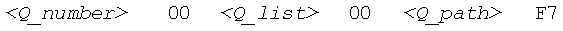
Допускается посылать только номер сцены или номер сцены с номером списка, рис. 6.
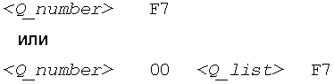
Поля Q_number, Q_list и Q_path передаются в виде ASCII-цифр от 0 до 9 (коды от 0x30 до 0x39), а для разделения секций используется символ десятичной точки (0x2E). Например, номер сцены 235.6 в списке 36.6 и пути 59 будет представлен в шестнадцатеричном виде так, как показано на рис. 7.
Между точками находится как минимум одна цифра, но устройства должны быть готовы к таким ошибкам, когда посылаются две и более точки друг за другом. Количество точек, разделяющих секции, не ограничивается.
Устройства, которые не поддерживают Q_list и/или Q_path, должны "отлавливать" нулевой байт после поля Q_number (или Q_list) и затем пропускать все данные, до байта 0xF7. Если в сообщении сцена задана только полем Q_number, а устройство поддерживает списки и пути, то используются списки и пути по умолчанию, либо текущие. MSC рекомендует производителям публиковать сведения по реакции устройств на вышеперечисленные поля.
Таймкод
В MIDI Show Control используются те же единицы времени, что и таймкоде MTC (часы, минуты, секунды, кадры, доли кадра и пользовательские биты). Передаются они почти тем же способом, что и в сообщении Full Frame (см. четвертую статью цикла), только содержат не четыре, а пять байт данных. В пятом байте помещаются либо доли кадра ff, либо статус-байт st. Расшифровка байт таймкода показана на рис. 8.
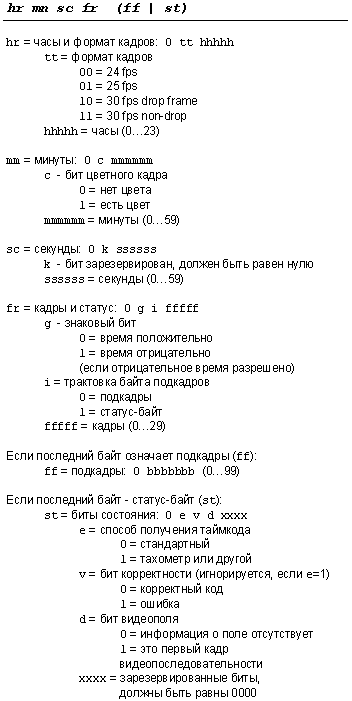
Статус-байт содержит дополнительную информацию о таймкоде. Например, при чтении данных с ленты полезно знать: это реально прописанный таймкод или просто данные времени, обновляемые от импульсов тахометра во время высокоскоростной перемотки. В последнем случае данные о долях кадра практически бесполезны, их трудно как получить, так и передать обычным методом.
При записи данных времени тип таймкода (drop-frame или non-drop-frame) может изменяться конечным устройством. Например, если управляемый контроллер получил от главного команду SET_CLOCK с кадра типа non-drop frame, а в устройстве используется таймкод с кадрами drop-frame, то данный кадр может просто интерпретироваться как drop-frame, без всяких математических преобразований. Если же команда SET_CLOCK получена с несуществующим числом кадров drop-frame (например, момент времени 00:22:00:00), то данное число должно быть заменено на следующее действительное число (в данном случае 00:22:00:02).
Расчет разности между двумя значениями времени в таймкоде может привести к неточностям, когда оба или одно значение имеют выпадающие кадры. В MSC перед расчетом любых смещений drop-frame кадры должны быть сначала преобразованы в non-drop frame. Итоговая разность всегда выражается в таймкоде типа non-drop frame.
Для преобразования из формата drop-frame в non-drop frame необходимо отнять число выпавших кадров с момента 00:00:00:00. Например, для преобразования числа 00:22:00:02 в формат non-drop нужно отнять 40 кадров, в результате получится 00:21:58:22. Число 40 получилось в результате того, что два кадра выпали на каждой минуте с 01 по 09, с 11 по 19 и с 21 по 22. Некоторые производители предпочитают хранить таймкод внутри устройства просто как количество кадров с момента 00:00:00:00. Это уменьшает сложность расчетов, но требует соответствующих преобразований на входе при записи и на выходе при воспроизведении.
Рекомендованные наборы команд
Протокол MIDI Show Control не требует от устройств поддерживать какие-то определенные команды и структуры данных, но рекомендует некоторые минимальные их наборы. Если устройства поддерживают один или несколько таких наборов, то совместимость их повышается, а объединение в единую систему упрощается. В спецификации определены четыре минимальных набора:
Минимальные наборы следует понимать лишь в духе наименьшего общего знаменателя, они ни в коей мере не ограничивают функциональность устройств. В следующих таблицах перечислены две категории стандартных команд, предлагаемых в MSC. Напротив каждой команды указан соответствующий минимальный набор, к которому она относится.
Общие команды
Набор общих команд (рис. 9) заимствован из базового набора команд управления светом, и, вероятно, применим для общих задач в любых шоу-системах.
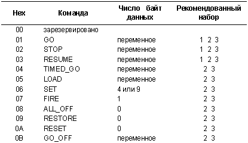
Команды GO, STOP, RESUME, LOAD и GO_OFF имеют одинаковую структуру и отличаются только кодом (рис. 10).
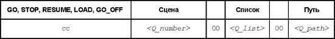
Команда GO (0x01) запускает указанную сцену на выполнение. Время перехода к сцене программируется в управляемом устройстве. Если необходимо задать время перехода из главного контроллера, следует использовать команду TIMED_GO. Если номер сцены не указан, а управляемое устройство имеет несколько списков сцен, то вызывается следующая по номеру сцена из активного списка.
Команда STOP (0x02) останавливает процесс перехода к указанной сцене. Если номер сцены не задан, все текущие процессы перехода останавливаются.
Команда RESUME (0x03) приводит к продолжению остановленного перехода к сцене. Если номер сцены не указан, все остановленные переходы продолжаются.
Команда TIMED_GO (0x04), рис. 11, запускает сцену на исполнение и задает время перехода. Если сцена не указана, вызывается следующая по номеру. Время задается в упомянутом выше пятибайтовом формате, обеспечивая переходы от мгновенных до продолжительных (вплоть до 24 часов).
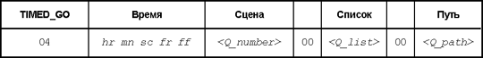
Если управляемое устройство не поддерживает эту команду, оно должно выполнять ее как простую команду GO, игнорируя данные времени, но обрабатывая номер сцены как обычно.
Команда LOAD (0x05) помещает сцену в состояние "подготовиться". Номер сцены должен быть указан обязательно. Эта команда используется в том случае, если для доступа к желаемой сцене требуется время. Таким образом, LOAD посылается заблаговременно, а последующая команда GO выполняется устройством мгновенно. Если номер сцены указан без номера списка, то сцены из всех списков с такими же номерами должны быть подготовлены к запуску.
Команда SET (0x06), рис. 12, задает значение какого-либо внутреннего параметра устройства, аналогично группе MIDI-сообщений канала General Purpose Controller (см. вторую статью цикла). Номер параметра и его значение — 14-битные числа, LSB которых передается первым. Управляемое устройство может передавать этот параметр для записи в главный контроллер (и, соответственно, получать его при воспроизведении). В качестве параметра могут быть использованы внутренние переменные, атрибуты, скорости, уровни, режимы, функции, эффекты, каналы, субканалы, переключатели и т. п.
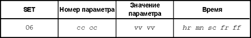
В качестве необязательных данных сообщения SET может использоваться время, за которое данный параметр должен достигнуть указанного значения. Время передается обычным способом, см. ранее. Если управляемое устройство не поддерживает данные времени в этом сообщении, оно должно их игнорировать. Для систем управления светом MSC предлагает стандартный набор параметров, который, как и все в этом протоколе, может быть расширен в зависимости от потребностей. Номера параметров для света приведены в таблице на рис. 13.
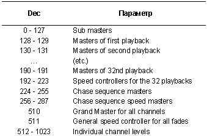
Команда FIRE (0x07), рис. 14, запускает клавиатурный макрос. Номер макроса задается семибитным числом mm. Макросы могут программироваться непосредственно в управляемом устройстве, а могут загружаться по протоколу MIDI File Dump, используя ASCII-формат данных сцены, или любым другим методом.
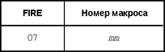
В следующих трех командах данные отсутствуют. Команда ALL_OFF (0x08) отключает все функции и выходы устройства без изменения настроек управляющих параметров. Состояние устройства перед запуском этой команды может быть восстановлено командой RESTORE (0x09).
Команда RESET (0x0A) переводит шоу в начало, то есть завершает все исполняемые сцены, устанавливает функции, использующие время, в начальное состояние (эквивалентное тому, которое наступает после включения питания) и загружает первую сцену в каждом доступном списке в режим ожидания. Команда RESET может также приводить к автоматическому открытию закрытых списков сцен и закрытых путей, но это определяется производителем устройства. Реакция на команду должна быть описана в документе MIDI-реализации (MIDI Implementation) устройства.
Команда GO_OFF (0x0B) начинает выключение сцены. Время выключения задается в управляемом устройстве. Если номер сцены не указан, выключается текущая сцена. Если указан только номер списка, выключаются все активные сцены этого списка. Это сообщение применяется для совместимости с устройствами, которые не замещают активную сцену новой по получении команды GO. Перед запуском новой сцены они требуют обязательного выключения текущей.
Команды звука
Команды звука заимствованы из базового набора команд существующих систем компьютерного управления звуковыми программами. Набор команд звука приведен в таблице на рис. 15. Все команды, кроме GO/JAM_CLOCK, SET_CLOCK, OPEN_CUE_PATH и CLOSE_CUE_PATH, содержат один байт данных — номер списка сцен.
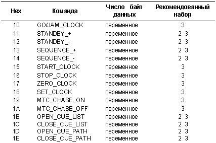
Команда GO/JAM_CLOCK (0x10), рис. 16, запускает указанную сцену на выполнение, а также переводит таймер устройства в значение сцены "Go Time", если сцена является автоматически исполняемой по времени. Если сцена запускается вручную, сообщение игнорируется.
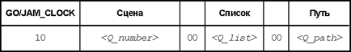
Команда STANDBY_+ (0x11) переводит следующую по порядку сцену в состояние готовности к выполнению. Если параметр Q_list не указан, используется открытый список сцен. Команда STANDBY_- (0x12) — предыдущую сцену списка.
Команда SEQUENCE_+ (0x13) переводит в состояние готовности следующую сцену уровнем выше. То есть сцену, имеющую первый номер в группе больше, чем у текущей сцены. Например, если сцена 29.324.98.7 находилась в состоянии готовности, а следующие по списку сцены имели номера 29.325, 29.4, 29.7, 29.9.876, 36.7, 36.7.832, 36.8, 37. и 37.1, то после команды SEQUENCE_+ будет переведена в режим готовности сцена 36.7. Если параметр Q_list не указан, используется открытый список сцен.
Все то же, с точностью до наоборот, применимо к команде SEQUENCE_- (0x14). В вышеуказанной последовательности, если текущая сцена имела номер 37.4.72.18.5, то в результате команды SEQUENCE_- будет переведена в состояние готовности сцена 36.7.
Команда START_CLOCK (0x15) включает таймер устройства. Таймер продолжает отсчет времени с того значения, на котором он был последний раз остановлен. Команда STOP_CLOCK (0x16), соответственно, останавливает таймер. Команда ZERO_CLOCK (0x17) сбрасывает таймер в значение 00:00:00:00, не влияя на его состояние, — включен или выключен.
Команда SET_CLOCK (0x18), рис. 17, устанавливает таймер в определенное значение, переданное в стандартном формате времени. На состояние таймера также не влияет.
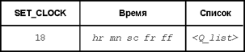
Команда MTC_CHASE_ON (0x19) переводит таймер на работу от водящего таймкода. Если при получении этой команды таймкод в устройство не поступает, таймер продолжает работать в обычном режиме (в остановленном или запущенном состоянии). Команда MTC_CHASE_OFF (0x1A) отключает таймер от входящего таймкода. При получении этого сообщения таймер возвращается в то запущенное или выключенное состояние, которое было до приема сообщения MTC_CHASE_ON.
Команда OPEN_CUE_LIST (0x1B) открывает указанный список сцен, то есть включает все сцены списка в текущее шоу. Команда CLOSE_CUE_LIST (0x1C) закрывает список.
Команды OPEN_CUE_PATH (0x1D) и CLOSE_CUE_PATH (0x1E) содержат один байт данных — номер пути. Первая команда открывает указанный путь, делая его доступным для шоу, то есть для всех остальных команд MSC. Вторая команда исключает путь из шоу.
На этом стандартные команды MSC 1.0 заканчиваются. В следующий раз поговорим о наборе команд для двухэтапного подтверждения и рассмотрим практический пример их использования.